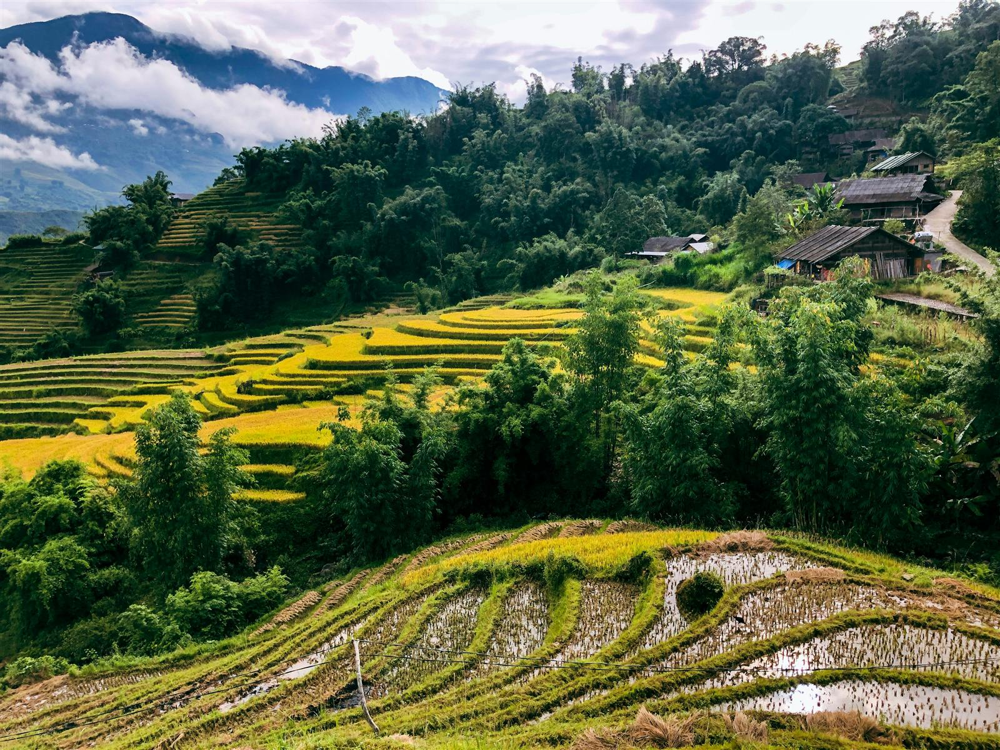

Vietnam's Highlights & Hidden Gems
14 days linking Vietnam's most famous highlights with its hidden treasures, from Ha Long Bay's karsts to the caves of Phong Nha and the lanterns of Hoi An.
Overview
Discover the very best of Northern and Central Vietnam on this immersive 14-day journey through iconic landmarks, breathtaking natural wonders, rich cultural heritage and authentic local experiences. From the bustling streets of Hanoi and the emerald waters of Ha Long Bay to the tranquil valleys of Pu Luong, the spectacular caves of Phong Nha, the imperial history of Hue and the timeless charm of Hoi An, this carefully crafted itinerary showcases both Vietnam's famous highlights and its hidden treasures. Designed for travellers seeking a balance of culture, adventure, history, cuisine and relaxation, this tour combines comfortable accommodation, expert local guides, unforgettable experiences and meaningful encounters with local communities.
Tour Highlights
- Explore the vibrant streets and rich culture of Hanoi
- Experience an exciting Army Jeep Tour through the capital's iconic landmarks
- Learn the secrets of Vietnam's famous coffee culture during a hands-on coffee-making class
- Cruise overnight through the UNESCO World Heritage Site of Ha Long Bay
- Trek through the spectacular rice terraces and valleys of Pu Luong Nature Reserve
- Visit local ethnic minority communities and experience authentic rural life
- Discover the magnificent caves of Phong Nha-Ke Bang National Park
- Explore the fascinating history of Commander Cave and Paradise Cave
- Visit the historic Vinh Moc Tunnels and the former DMZ
- Explore the Imperial City of Hue and its royal heritage
- Travel across the spectacular Hai Van Pass
- Visit the towering Lady Buddha overlooking Da Nang
- Experience the magic of Hoi An Ancient Town
- Join a traditional Vietnamese cooking class and basket boat experience
Itinerary
Day 1Welcome to Vietnam
Arrive in Hanoi and settle into the heart of Vietnam's vibrant capital. Enjoy a welcome dinner and your first introduction to the country's incredible cuisine and culture.
Day 2Discover Hanoi
Explore Hanoi's fascinating blend of old and new on a unique Army Jeep Tour. Visit iconic landmarks, hidden alleyways, bustling markets, and take part in a traditional Vietnamese coffee-making experience.
Day 3Cruise Ha Long Bay
Travel to the UNESCO World Heritage Site of Ha Long Bay and board your overnight cruise. Enjoy kayaking, cave exploration, swimming, delicious local cuisine, and unforgettable sunset views amongst the limestone karsts.
Day 4Journey to Pu Luong
Enjoy a final morning on the bay before travelling to the stunning Pu Luong Nature Reserve. Relax and take in the peaceful scenery of rice terraces, mountains and traditional villages.
Day 5Explore Pu Luong
Spend the day trekking through beautiful valleys and rice fields, visiting local Thai ethnic communities and experiencing authentic rural life in one of Vietnam's most beautiful hidden gems.
Day 6Travel to Phong Nha
Journey south to Phong Nha, one of Vietnam's most spectacular natural regions. Enjoy free time to relax and explore the peaceful countryside surroundings.
Day 7Phong Nha Cave Discovery
Visit the famous Phong Nha Cave within the UNESCO-listed Phong Nha-Ke Bang National Park. Learn about its fascinating history and geological formations before experiencing local village life and regional cuisine.
Day 8Commander Cave & Paradise Cave
Explore two of Vietnam's most impressive caves. Discover the wartime history of Commander Cave before visiting Paradise Cave, one of the longest and most spectacular dry caves in Asia.
Day 9Vietnam's Wartime History
Visit the remarkable Vinh Moc Tunnels, where entire communities lived underground during the war. Continue via the historic DMZ before arriving in the former imperial capital of Hue.
Day 10Explore Imperial Hue
Discover the rich history of Vietnam's last royal dynasty as you explore the Hue Citadel, Thien Mu Pagoda, and the vibrant local markets along the Perfume River.
Day 11Scenic Journey to Hoi An
Travel south via the spectacular Hai Van Pass, one of Vietnam's most scenic coastal roads. Visit the impressive Lady Buddha before arriving in the enchanting UNESCO-listed town of Hoi An.
Day 12Hoi An at Leisure
Enjoy a full day to explore Hoi An at your own pace. Wander through lantern-lined streets, browse local markets, visit historic temples, enjoy riverside cafés, or have custom clothing made by the town's famous tailors.
Day 13Cooking Class & Local Experiences
Immerse yourself in Vietnamese culinary traditions with a hands-on cooking class. Visit the local market, learn authentic recipes, and enjoy a traditional basket boat ride through the coconut forests surrounding Hoi An.
Day 14Farewell Vietnam
Enjoy a final morning at leisure before transferring to Da Nang International Airport for your onward journey.
Accommodation
Inclusions & Exclusions
Included
- Vietnam Visa
- Airport arrival and departure transfers
- Accommodation throughout the tour
- Daily breakfast
- Selected lunches and dinners as specified in the itinerary
- Overnight Ha Long Bay cruise
- Private transportation throughout the tour
- Professional English-speaking guides
- Entrance fees and sightseeing activities as mentioned
- Hanoi Army Jeep Tour
- Vietnamese Coffee Making Experience
- Pu Luong Trekking Experience
- Phong Nha Cave Tour
- Commander Cave & Paradise Cave Tour
- Vinh Moc Tunnels Visit
- Hue Imperial City Tour
- Hoi An Cooking Class
- Basket Boat Experience
- Bottled drinking water during transfers
Not Included
- International flights
- Domestic flights
- Travel and medical insurance
- Drinks, alcoholic beverages and personal refreshments
- Meals not specifically mentioned in the itinerary
- Optional activities and excursions
- Personal spending money
- Laundry services, telephone calls and minibar expenses
- Tips and gratuities
- Additional airport transfers outside scheduled tour dates
- Early check-in and late check-out fees
- Any services not specifically mentioned under "Inclusions"
Travel Notes
- Best travel season: September to May
- Moderate fitness level recommended for trekking activities in Pu Luong
- Weather conditions vary considerably between Northern and Central Vietnam, layered clothing is recommended
- Comfortable walking shoes are highly recommended
- Travel insurance is compulsory for all participants
Flexible Travel
This itinerary is designed as a private, tailor-made journey and can be fully customised to suit your interests, travel style, budget and preferred pace of travel. Whether you would like to upgrade accommodation, add extra experiences, extend your stay or modify activities, our team will be happy to create the perfect Vietnam adventure for you.